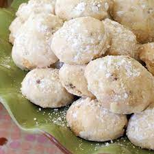

Great-great grandma Ama's Sand Tart Cookie Recipe

What exactly is a sand tart?
Sand Tarts are buttery-flaky and delicious. They are similar to a Mexican Wedding Cookie or a Russian Tea Cake.
This recipe only has 6 ingredients (and one of them is water), and it's quite easy and quick to make. It has definitely become my go-to holiday recipe.
This recipe is my Great-great grandma Ama's recipe. I haven't changed anything, because it's simply the best cookie ever. And why mess with perfection?
Ingredients
- 1 cup butter (preferrably unsalted)
- 4 TBSP powdered sugar
- 1 tsp water
- 1 tsp vanilla
- 2 cups flour (I use all-purpose flour)
- 1 cup chopped pecans (can buy a bag of pre-chopped to save time)
Steps
- Pre-heat oven to 300 degrees Fahrenheit
- Cream butter, sugar and water until light and fluffy.
- Blend in vanilla, flour and nuts.
- Rolls into balls the size of walnuts. Dough will be very soft.
- Place on ungreased cookie sheet and bake at 300 degrees Fahrenheit for 25 minutes. Cookies do not brown.
- Roll in powdered sugar while still warm.
- Cool on cooling racks and enjoy!